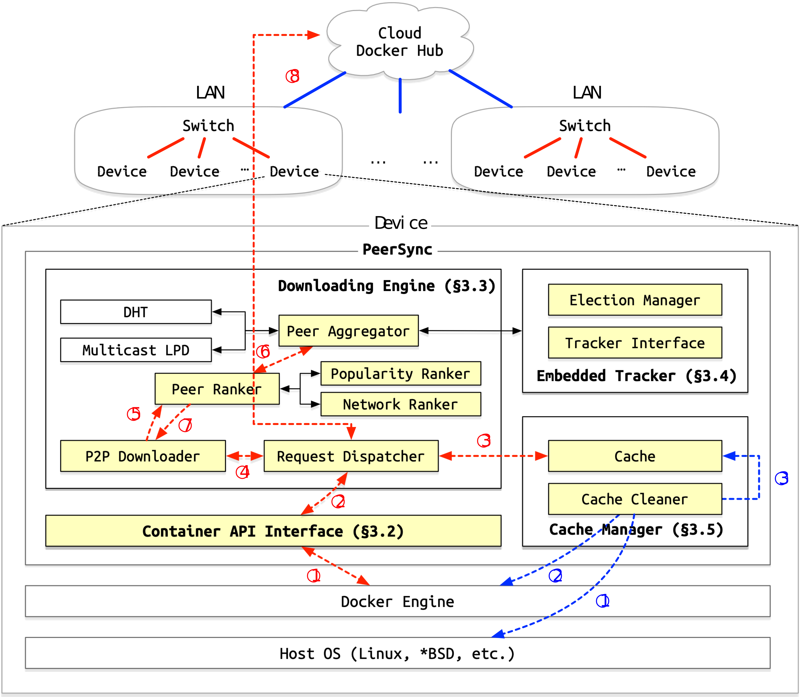

Internals
This page describes the design and implementation details of PeerSync.
Motivation
There are two major points of motivation for PeerSync:
- Use local where possible to reduce latency and uplink bandwidth usage.
- Enable self-healing and self-organizing swarm for easy deployment and management.
These two points are based on the resource-constrained and unreliable nature of edge devices, and the observation that the current P2P-based systems are not optimized for these environment settings.
Architecture

In PeerSync, we implemented a P2P network from scrach, focusing on using runtime metrics to optimize traffic scheduling. While there are multiple points of optimization, the most important one is to keep traffic local (i.e. within the same layer 2 network) as much as possible. The tracker system is similar to the one used in BitTorrent, but with election functionality to ensure a tracker is always available without human intervention. The caching system uses a special popularity-based algorithm to keep the most popular images in the local network, so they can be quickly shared even if one peer no longer has the it. Finally, all the complex logic is hidden behind a simple OCI-compliant interface, enabling easy integration with existing workflows.